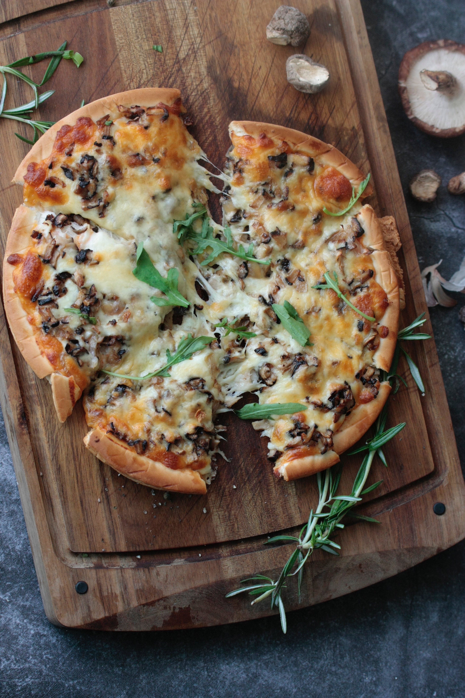
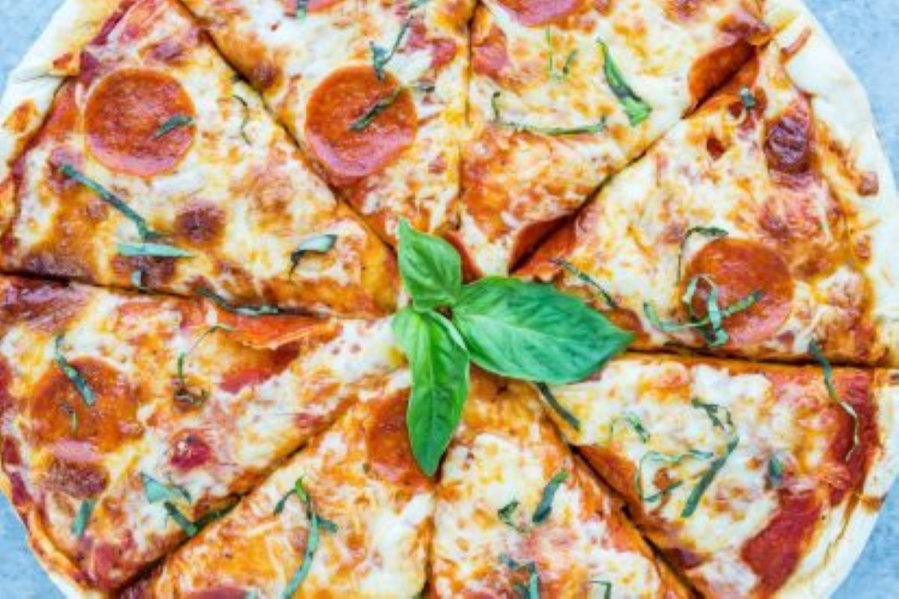

One of My Favorite Foods...PIZZA!

Photo credit: Jakub Kapusnak on Foodiesfeed

Photo credit: Jakub Kapusnak on Foodiesfeed

Photo credit: LEi-DESIGN on Foodiesfeed

Photo credit: Iftekhar Uddin Emon on Foodiesfeed

Photo credit: Jakub Kapusnak on Foodiesfeed
Photo credit: Jakub Kapusnak on Foodiesfeed

Photo credit: Whitney Wright on Foodiesfeed

Photo credit: Hoa Luu on Foodiesfeed